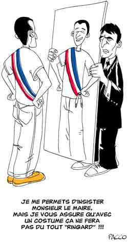

Votez Christophe Grébert
Le plus célèbre des Putoliens sur la blogosphère m’a rendu visite dans le Midi. J’en ai profité pour le podcaster. Nous avons parlé du journalisme citoyen, dont il est l'un des pionniers en France, et de sa décision de se présenter en 2008 à la mairie de Puteaux.
Au sujet du journalisme citoyen (17 minutes)
Au sujet de Puteaux et des municipales (17 minutes)

Par fuckingkarma.com